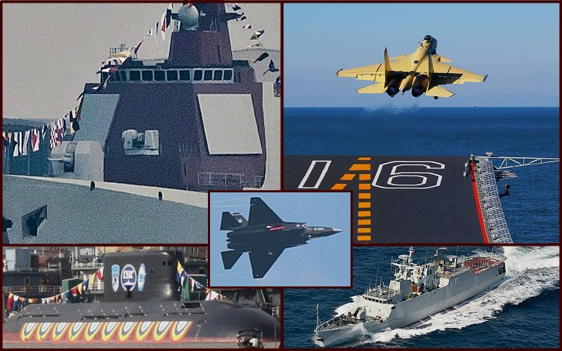

(Click on any image for a larger picture)

2012 was a huge year for the Peopele's Republic Armny Navy, thje PLAN. It cannot emphasized enoguh how important the atcivities that have gone on in this last year are to the future of the PLAN and its ability to project power, defend and assert its interests, and to, as a blue water fleet, get out beyond the 2nd island chain in the western Pacific and carry their influence to many other places on the seven seas.
PLAN Commissions & Begins carrier flight qualifications on its first aircraft carreir, CV-16, Lioaning:
After over a decade of anayliss, design, and then serious refit, and after launching their carrier late last year, the PLAN commissioned its first aircraft carrier, the former Soviet Varyag which it had purchased from the Ukraine, and then put it to sea and began carrier operations quialifcations and training with their new fleet defense strike fighter, the J-15, Flying Shark. These are both very critical events and are, of course tied directly together. The Liaoning is a 65,000 ton conventionally powered aircraft carrier with an angled deck, an arrested landing system, and a ski-jump take-off assist bow to allow its large and capable aricraft of becoming airborne without the use of a catapault. The carrier can carry up to fifty aircraft and has two large, deck-edge elevators for transporting aircraft between its deck and its hanger. The carrier is adequately defended from close in attack with its three Type 1030 CIWS, which are ten barrelled, 30 mm gatling guns that operate like the US 20mm Phalanyx system to target incoming anti-ship missiles or aircraft. It also has four FL-3000N missiles systems, each carrying 18 missiles (72 missiles altogether) for anti-air defense. These systems look and act like the US Rolling Air-Frame Missile Systems (RAM) that are used to protect large US vessels, including US Aircraft carriers. This vessel, once it is fully operational with two squadrons of J-15 fighters and other aircraft, will be a significant game changer in the western Pacific. Outside of the United States, no other nation in the Western Pacific has such a powerful aircraft carrier. The Indians are now building three carriers to counter what is expected to be a number of PLAN carriers over the next decade.
PLAN begins J-15 flight qualifications and Training:
The J-15 fighter is a supersonic, multi-role fighter similar to the US Navy F/A-18E Super Hornet. It is based on the Rusian SU-33 naval aviation fighter, but has been significantly upgraded and is a new build by the Chinese. The Chinese aircraft has AESA radar, it has significantly more high strength, light-weight composit material in its air frame, it has a glass cockpit utilizing the latest Chinese electronics for its interface to the pilot, and the aircraft is capable of both air to air, and air to surface operations, Very manueverable with a very good thrust to weight ratio, the aircraft is capable of carrying ten anti-air missiles of varying types and ranges in the fleet defense role, but can also be armed for air to surface combat duties carrying a number of smart/guided munitions and missles as well as free-fall, unguided bombs. 24 such aircraft are expected to operate off of the carrier. Right now, the PLAN has built at least eight initial aircraft, and is believed to be in at least low operational production of the aircraft. It is expected that the PLAN will have all 24 aircraft available for this carrier by 2014-2015. It is also expected that production will continue because the Chinese have indicated that in the near future they will build at least two more large carrier, indegenous carriers, if not more. The ability this will give the People's Republic of China to project power is significant and not to be underestimated. It is expected a two-seat version of this aircraft will be developed and that a Electronic Warfare version of the aircraft will be forthcoming.
PLAN reveals new enhanced Guided Missile Destroyer:
The PLAN continued serial production of its AEGIS-like, Type 52C, Lanzhou class guided missiles destroyers in 2011. Since that time they have produced four more of these vessels bringing their total inventory to six. It appeared that a seventh and eighth were under construction. But when the first of these was launched, it was immediately apparent that the PLAN had produced a significantly enhanced version of the Type 052C on the same hull. The new destroyer appears to be in the same weight class range as the Type 052C of 7,000-7,200 tons, and is also powered by a CODOG system consisting of two Gas Turbines and two Deisel Engines. The gas turbines are the license built and improved QC-280 engines (from the DA80 Ukrainian gas tubines), and the diesels are Shaanxi diesel engines. The licence built gas turbins are produced entirely in China, with no exported parts. The new vessels, which are built on the same hull are called the Type 052D and have the following new enhancements:
- A larger, more powerful Phased Array Radar system.
- A new VLS system with a forward 32 cell capacity and an aft 32 cell matrix, making for 64 total VLS cells as opposed to the 48 missiles carried by the Type 052C. The aft matric replaces the eight cannister launched surface to surface missiles carried by the 052C.
- A standard VLS System that will allow for anti-air, anit-surface, anti-submarine, and other missile types to be commonly launched from the same VLS cells..
- A new 130mm main gun that appears capable of firing extended range munitions. This replaces the 100mm main gun on the Type 052C vessel.
- An aft FL-3000N close-in anti-air missile launcher with 18 cells. This replaces the aft Type 730 CIWS gun system, while retaining the forward Type 730 CIWS.
- A helicopter hanger for one medium sized ASW, SAR, or ASuW helicopter located in the center of the deck house just forward of the helo landing pad. The earlier hanger was off set on the port side.
At this point it is not known which anti-air missile the new DDG will carry, but it is safe to presume, with the more powerful PARs that the missile will also have increased range to take advantage of it. The second such vessel is almost ready to launch and components for further builds have been identified. It is anticpated that the PLAN will build 8-12 of these vessels, bringing them to a total of 18 very modern and very capable AEGIS-like vessels. These vessels are ideally suited to be the primary air defense vessels for their high value assets like the carrier(s) and their large LPD amphibiuos assault ships. In conjunction with their new Type 054A FFGs, the PLAN will soon be capable of operating very significant Carrier Strike Groups that are very well defended.
PLAN continues Type 054A, Jiangkai II FFG poroduction:
The PLAN completed its 15th and 16th Type 054A, Jiangkai II, guided missile frigates at their HP and HD shipyards this year. It was expected that a lapse in building would occur and that the next batch build would be an imporved version. Howecver, late in the year it became apparent that HP was building another Type 054A, although it might in fact be an improved version. It is not far enough along to determine yet. Now it is anticpated that both HD and HP shipyards will continue building more of these frigates. They are a very strong, balanced, mulit-funtion guided missile frigate. They have a 76mm main gun, a 32 cell VLS system for medium range anti-air warfare missiles, eight large surface to surface missile located in cannisters amid-ships, a helicopter landing pad and hangar space for one medium sixed ASW/SAR/ASuW helicopter liek the Chinese Z-9C or impotrted KA-28 helicopter.
These vessels are very capable combatants and will continue be a significant addition to and PLAN SCG, ARG or SAG. The PLAN has been using these vessels extensively, usually sending a SAG consisting of two of them at a time with an AOR vessel in attendance, to the international anti-pirating mission off of Somalia.
PLAN Intorduces and beings mass production of the new Type 056 Offshore Patrol/Littoral Combat Vessel:
The PLAN commissioned its first Type 056 OPV early in the year. Initially it was thought that the PLAN would build two of these and test them before tweeking them and imporving them and then going into serial production. Instead, first at two, and then ultimately eight different shipyards being producing these vessels in serail/mass production. To date, 10 have already been launched and it is expected that the PLAN will nhow buildat least 36 or more of these vessels to replace their numerous old, antiquated and aging smaller Jianghu and Type 037 class frigates.
These vessels displace over 1,300 tons, are almost 300 ft long, carry a 76mm main gun, four cannister launched surface to surface missiles, two auto-fire 30mm guns similar to the US Mk-38 system, an eight cell FN-3000L missile system on the aft deck house, and have a landing pad for a helicopter, but no hanger. They will be ideally suited for offshore patroling along China's very long coast line, where lottoral waters, and warfare rasie significant concerns. These vessels appear to have a data link capability and will clearly work in conjunction with other OPVs, land or ship based ASW helos, and in concert with a potential "controlling" larger vessel (ie. a Type 054A frigate or one of China's mannyt new Destroyers) in patrolling and combating any agreesors in the lottoral regions.
PLAN begins construction of 4th LPD:
Late in 2012 sections of a new vessel began to appear in the HD shipyard. Upon closer analysis of these sections, it is clear a new LPD is under construction. It is not known at this date if this represents a 4th Type 071 LPD, or if this will ne a new, enahnced LPD that may get a Type 071A designation. The sections observed are clearly like the Type 071 vessels, but they are also from the aft prop area and so it is unclear yet as to what, if any enhancements will appear. either way, a 4h LPD appears to be on the way. These vessels carry up to four of the Chinese LCAC air cusion transports, can simultaneouly land two large helos (and spot or carry up to four), and displace over 20,000 tons. They are very close in appearance and function to the US Navy's San Antonio Class LPDs.
PLAN Builds more Yuan Class SSKs:
PLAN continues SSN development and construction.:
By the end of 2012 it appearewd that the PLAN had completed at least 4 Type 093 SSNs, which are the follow on class to their fiver earlier Type 091, Hahn class SSNs. The Type 093s are considered to be exquivalent to the Flight I class Los Angels attack submarines of the US Navy. Throughout 2012 there was continued chatter and indication that a new Type 095 SSN had been designed and was under construction and potentially launched. In fact, perhaps up to two of these new vessels appear to be either under construction, launced or near launching. These vessels are apparently enhanced versions of the Type 093 and imporve in quietness with reactor nosie reduction and tiling to reduce signature. Analysts are unsure at this point oif these new vessels will come close to the Flight II Los Angeles class standard.
If they were reaching this stage of operations, it would mean thet the PLAn would then field very adequate SSns to help escort their high value vessels like theeir Carrier(s), their Amphibious Assault groups, and particularly their SSBN fleet, which itself has grown with the newer Type 094 vessels and also a potential for a newer Type 096 SSBN.
Summary:
The People's Republic of China continues to advance rapidly in their naval modernization and buildup. Their numbers of new, very modern and qualitatively advanced vessels are growing very rapidly. The product of this build-up ihas become a source of great pride for the People of China as was observed when the first carrier flight qualifications occurred and were videoed and released by the PLAN. Chinese citizens and those of Chinese decent all over the world were seen for weeks mimicking the carrier deck crews as they would direct take-offs and landings on the deck of their new carrier. The build-up is producing a veritaable naval arms race in the Western PAcific. the US NAvy is "picoting" to the Pacific as a rsult and will be in place to confront China should tensions rise. The Japanese are rapidly modernizing their destroyer and maritime aviation, including producing two more new, and even larger flat deck carriers, the Projectt 22DDH carriers. Teh Australians are building two multi-function and large LHD vessels that will be capable of either air assault, or launching STOVL aircraft if necessary and will be protecting them with three new AEGIS destroyers of their own. The Lorans are continuing to develop and grow their new, modern classes of vessles including more Se Jong AEGIS destroyers which diplace over 10,000 tons each and adding their new, very stealthy FFX frigates. Inida is procucing it own new AEGIS-like desroyers and new advanced frigates. India has alos taken on a long term lease of an advnaced, modern Russian SSN, and is indicating that it would like to either license build, or lease another. The INdians are also building three STOBAR carriers of their own, and the third may in fact be CATOBAR. They have purchased many new Mig-29K naval strike aircraft to place on these carriers and are producing their own Light Attack Aircraft to add to those carrier air wings.
Over the next ten years this trend will not only continue...it will intensify as these carriers and their air groups form up, and as sufficent escorts are built to suppor them.
With more and more naval power being available to these nations on the sea, the potential for historical maritime tensions and flair ups, like what we saw in 2012 with the ISlands between Taiwan and JApan which are claimed and controlled by Japan, but also claimed by China as islands which should have been returned to CHina after World War II, over similar islands and resource rich regions in the South China Sea, and over sea lanes and trade routes necessary to these nation, will have the potential for becoming more serious. This growth and these potentials need to be taken under careful and measured consideration as the naval power grows. The US will a;lmost certainly be drawn into, at least at the negotiation and ptoential logistical support role as these tensions arise. Being prepared for them will be an absolute requiremnt if clam minds and measured responses are to prevail.
|